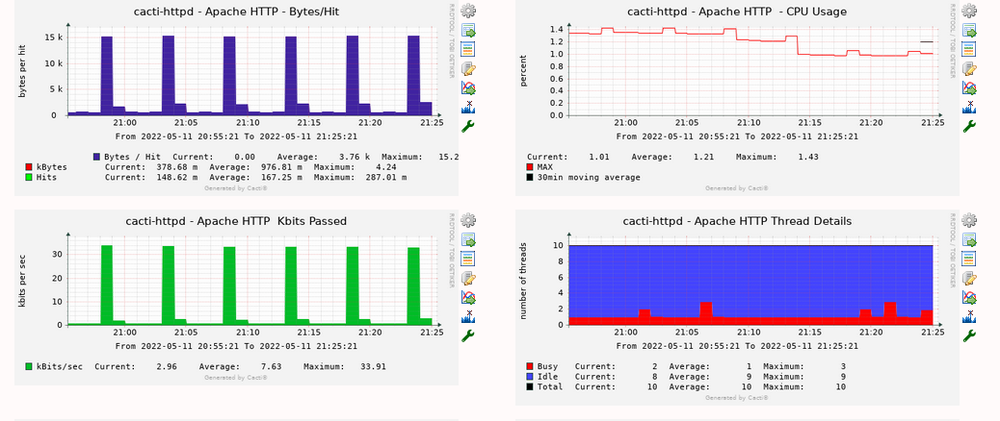

The Apache http webserver template allows you to monitor your local Cacti server's Apache server for performance KPI's
This template leverages the mod_status module in apache in order to pull the kpi data to feed into the script

For Centos/Redhat implementations the config will look as follows
Place the below config in /etc/httpd/conf/httpd.conf
LoadModule status_module modules/mod_status.so
ExtendedStatus On
<Location /server-status>
SetHandler server-status
Require local
</Location>
Enable the apcache2 status module:
Place the below config into a new file (eg, 80-server-status.conf) within /etc/apache2/conf-available
ExtendedStatus On
<Location /server-status>
SetHandler server-status
Require local
</Location
Then use the following commands to enable the stauts module and new configuration Note: You must restart the apache ( systemctl restart apache2) for the config to take effect
Note: This configuration restricts the /server-status url to local access only via the Require local directive
Copyright (c) 2004-2024 The Cacti Group